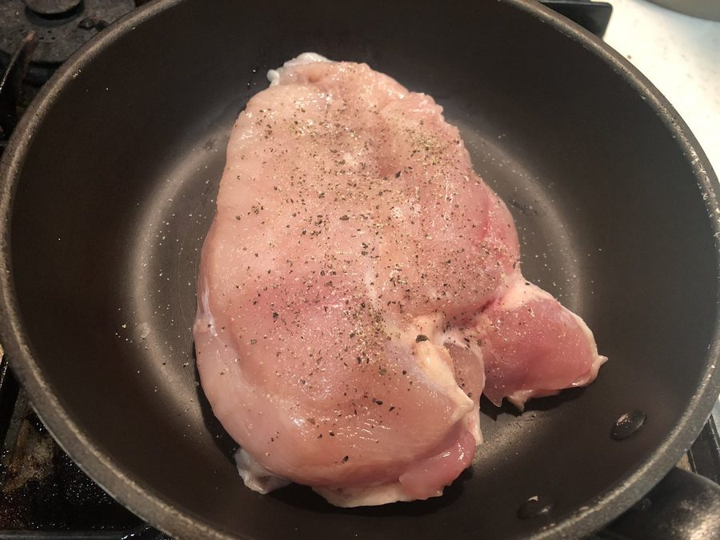

鶏ムネ肉の梅ソースがけ
材料
| 梅干し | 2個（塩分控えめがおすすめ） |
| みりん | 大さじ1 |
| しょうゆ | 小さじ1 |
| 酒 | 大さじ1 |
| 砂糖 | 小さじ1/2（お好みで） |
| 和風だし | 大さじ2（顆粒＋水でも可） |
作り方
- つめたいままのフライパンに鶏ムネ肉の皮目をぴったり貼りつけて塩胡椒したら、火をつけます。あくまで弱火です。
- 5分くらい経つとようやくジリジリ音がしてきます。この後最後まで絶対に鶏肉を動かしてはいけません。蓋もしてはいけません。弱火のままでひたすら放置です。
- 15分後、皮から脂がしっかり出てきて香ばしい匂いがしてきます。「焦げるかも」と心配になってきますがうろたえてはいけません。引き続き弱火放置です。
- 25分経ちました。脂がさらに滲み出てくるので、凝り性の人はここでにんにくとかハーブとか、脂に香りを付与するものを足してください。「ご家庭にローズマリーは無いっ」という人は何も足さなくても特に問題ありません。
- 30分経過しました。一見まるで生のままですが、ここで鶏肉の表面を触ると、人肌より少し高い温度になってます。お風呂くらいです。横から見ると、鶏肉の半分くらいまで白っぽく火が通ってるのが確認できると思います。
- ここでようやくひっくり返します。最高の焼き色がついて、皮はパリパリです。繰り返しますが、少しでも動かしたり蓋をしたりしたら絶対こうはなりません。ひっくり返したら3秒数えて火を止めます。その状態でさらに10分放置です。
出典：Xのレシピを見る